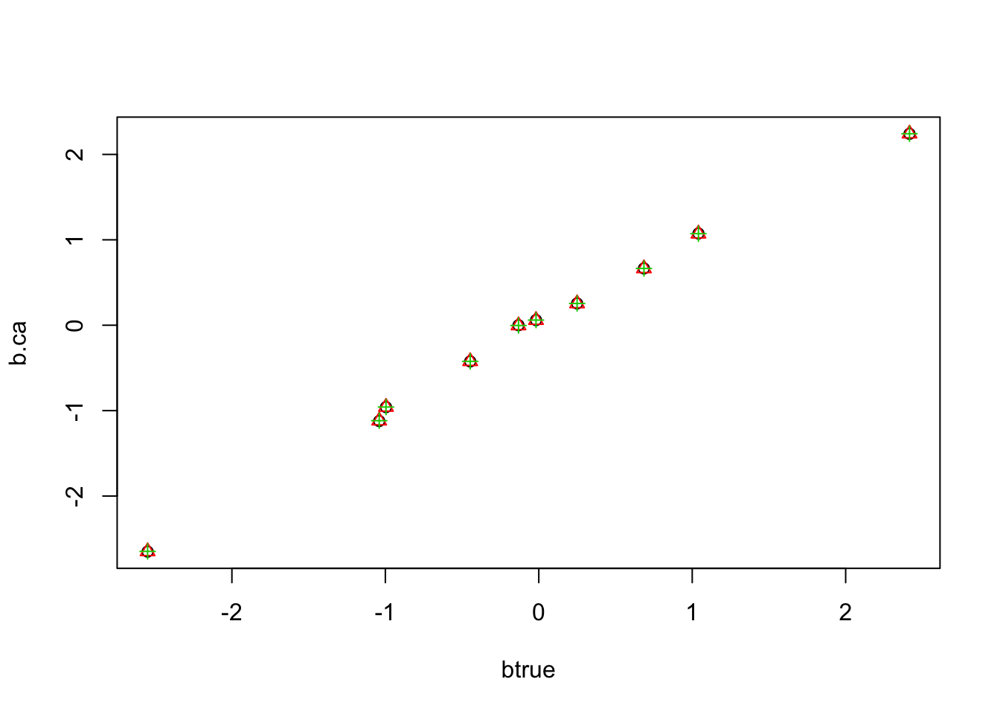
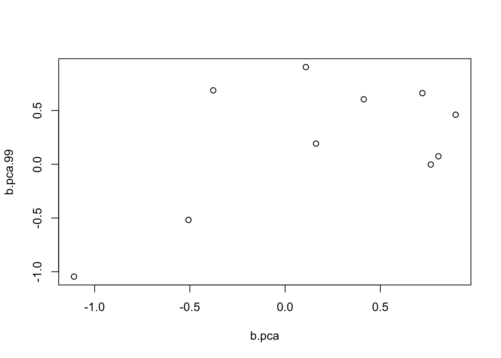

multiple regression with ash, parallel coordinate ascent
Matthew Stephens
2019-10-07
Last updated: 2019-10-07
Checks: 7 0
Knit directory: misc/analysis/
This reproducible R Markdown analysis was created with workflowr (version 1.4.0). The Checks tab describes the reproducibility checks that were applied when the results were created. The Past versions tab lists the development history.
Great! Since the R Markdown file has been committed to the Git repository, you know the exact version of the code that produced these results.
Great job! The global environment was empty. Objects defined in the global environment can affect the analysis in your R Markdown file in unknown ways. For reproduciblity it’s best to always run the code in an empty environment.
The command set.seed(1) was run prior to running the code in the R Markdown file. Setting a seed ensures that any results that rely on randomness, e.g. subsampling or permutations, are reproducible.
Great job! Recording the operating system, R version, and package versions is critical for reproducibility.
Nice! There were no cached chunks for this analysis, so you can be confident that you successfully produced the results during this run.
Great job! Using relative paths to the files within your workflowr project makes it easier to run your code on other machines.
Great! You are using Git for version control. Tracking code development and connecting the code version to the results is critical for reproducibility. The version displayed above was the version of the Git repository at the time these results were generated.
Note that you need to be careful to ensure that all relevant files for the analysis have been committed to Git prior to generating the results (you can use wflow_publish or wflow_git_commit). workflowr only checks the R Markdown file, but you know if there are other scripts or data files that it depends on. Below is the status of the Git repository when the results were generated:
Ignored files:
Ignored: .DS_Store
Ignored: .Rhistory
Ignored: .Rproj.user/
Ignored: analysis/.RData
Ignored: analysis/.Rhistory
Ignored: analysis/ALStruct_cache/
Ignored: analysis/figure/
Ignored: data/.Rhistory
Ignored: data/pbmc/
Ignored: docs/figure/.DS_Store
Untracked files:
Untracked: .dropbox
Untracked: Icon
Untracked: analysis/GTEX-cogaps.Rmd
Untracked: analysis/PACS.Rmd
Untracked: analysis/SPCAvRP.rmd
Untracked: analysis/compare-transformed-models.Rmd
Untracked: analysis/cormotif.Rmd
Untracked: analysis/eQTL.perm.rand.pdf
Untracked: analysis/eb_prepilot.Rmd
Untracked: analysis/flash_test_tree.Rmd
Untracked: analysis/ieQTL.perm.rand.pdf
Untracked: analysis/m6amash.Rmd
Untracked: analysis/mash_bhat_z.Rmd
Untracked: analysis/mash_ieqtl_permutations.Rmd
Untracked: analysis/mixsqp.Rmd
Untracked: analysis/nejm.Rmd
Untracked: analysis/normalize.Rmd
Untracked: analysis/pbmc.Rmd
Untracked: analysis/poisson_transform.Rmd
Untracked: analysis/pseudodata.Rmd
Untracked: analysis/sc_bimodal.Rmd
Untracked: analysis/susie_en.Rmd
Untracked: analysis/susie_z_investigate.Rmd
Untracked: analysis/svd-timing.Rmd
Untracked: analysis/temp.Rmd
Untracked: analysis/test-figure/
Untracked: analysis/test.Rmd
Untracked: analysis/test.Rpres
Untracked: analysis/test.md
Untracked: analysis/test_sparse.Rmd
Untracked: analysis/z.txt
Untracked: code/multivariate_testfuncs.R
Untracked: data/4matthew/
Untracked: data/4matthew2/
Untracked: data/E-MTAB-2805.processed.1/
Untracked: data/ENSG00000156738.Sim_Y2.RDS
Untracked: data/GDS5363_full.soft.gz
Untracked: data/GSE41265_allGenesTPM.txt
Untracked: data/Muscle_Skeletal.ACTN3.pm1Mb.RDS
Untracked: data/Thyroid.FMO2.pm1Mb.RDS
Untracked: data/bmass.HaemgenRBC2016.MAF01.Vs2.MergedDataSources.200kRanSubset.ChrBPMAFMarkerZScores.vs1.txt.gz
Untracked: data/bmass.HaemgenRBC2016.Vs2.NewSNPs.ZScores.hclust.vs1.txt
Untracked: data/bmass.HaemgenRBC2016.Vs2.PreviousSNPs.ZScores.hclust.vs1.txt
Untracked: data/eb_prepilot/
Untracked: data/finemap_data/fmo2.sim/b.txt
Untracked: data/finemap_data/fmo2.sim/dap_out.txt
Untracked: data/finemap_data/fmo2.sim/dap_out2.txt
Untracked: data/finemap_data/fmo2.sim/dap_out2_snp.txt
Untracked: data/finemap_data/fmo2.sim/dap_out_snp.txt
Untracked: data/finemap_data/fmo2.sim/data
Untracked: data/finemap_data/fmo2.sim/fmo2.sim.config
Untracked: data/finemap_data/fmo2.sim/fmo2.sim.k
Untracked: data/finemap_data/fmo2.sim/fmo2.sim.k4.config
Untracked: data/finemap_data/fmo2.sim/fmo2.sim.k4.snp
Untracked: data/finemap_data/fmo2.sim/fmo2.sim.ld
Untracked: data/finemap_data/fmo2.sim/fmo2.sim.snp
Untracked: data/finemap_data/fmo2.sim/fmo2.sim.z
Untracked: data/finemap_data/fmo2.sim/pos.txt
Untracked: data/logm.csv
Untracked: data/m.cd.RDS
Untracked: data/m.cdu.old.RDS
Untracked: data/m.new.cd.RDS
Untracked: data/m.old.cd.RDS
Untracked: data/mainbib.bib.old
Untracked: data/mat.csv
Untracked: data/mat.txt
Untracked: data/mat_new.csv
Untracked: data/matrix_lik.rds
Untracked: data/paintor_data/
Untracked: data/temp.txt
Untracked: data/y.txt
Untracked: data/y_f.txt
Untracked: data/zscore_jointLCLs_m6AQTLs_susie_eQTLpruned.rds
Untracked: data/zscore_jointLCLs_random.rds
Untracked: docs/figure/eigen.Rmd/
Untracked: docs/figure/fmo2.sim.Rmd/
Untracked: docs/figure/newVB.elbo.Rmd/
Untracked: docs/figure/poisson_transform.Rmd/
Untracked: docs/figure/rbc_zscore_mash2.Rmd/
Untracked: docs/figure/rbc_zscore_mash2_analysis.Rmd/
Untracked: docs/figure/rbc_zscores.Rmd/
Untracked: docs/figure/susie_en.Rmd/
Untracked: docs/figure/test.Rmd/
Untracked: docs/trend_files/
Untracked: docs/z.txt
Untracked: explore_udi.R
Untracked: output/fit.k10.rds
Untracked: output/fit.varbvs.RDS
Untracked: output/glmnet.fit.RDS
Untracked: output/test.bv.txt
Untracked: output/test.gamma.txt
Untracked: output/test.hyp.txt
Untracked: output/test.log.txt
Untracked: output/test.param.txt
Untracked: output/test2.bv.txt
Untracked: output/test2.gamma.txt
Untracked: output/test2.hyp.txt
Untracked: output/test2.log.txt
Untracked: output/test2.param.txt
Untracked: output/test3.bv.txt
Untracked: output/test3.gamma.txt
Untracked: output/test3.hyp.txt
Untracked: output/test3.log.txt
Untracked: output/test3.param.txt
Untracked: output/test4.bv.txt
Untracked: output/test4.gamma.txt
Untracked: output/test4.hyp.txt
Untracked: output/test4.log.txt
Untracked: output/test4.param.txt
Untracked: output/test5.bv.txt
Untracked: output/test5.gamma.txt
Untracked: output/test5.hyp.txt
Untracked: output/test5.log.txt
Untracked: output/test5.param.txt
Note that any generated files, e.g. HTML, png, CSS, etc., are not included in this status report because it is ok for generated content to have uncommitted changes.
These are the previous versions of the R Markdown and HTML files. If you’ve configured a remote Git repository (see ?wflow_git_remote), click on the hyperlinks in the table below to view them.
| File | Version | Author | Date | Message |
|---|---|---|---|---|
| Rmd | 09b4863 | Matthew Stephens | 2019-10-07 | workflowr::wflow_publish(“mr_ash_sca.Rmd”) |
library("ashr")Introduction
The idea here is to investigate a parallel approach to updating bhat in multiple regression with ash.
The basic idea is that the optimal b should be the fixed point of the following iterations: 1. r = (Y-Xb) 2. bhat = b + d^{-1}X’r 3. shat = sigma/sqrt(d) 4. b = ash(bhat,shat)
More accurately, I believe that if b is a fixed point of this then it will also be a fixed point of the regular coordinate ascent (at least, something like this should be true.)
mr_ash_parallel_ca = function(X,Y,b_init=NULL,max_iter=100,sigma=1,tol=1e-5){
if(is.null(b_init)){b_init = rep(0,ncol(X))}
b = b_init
d = Matrix::colSums(X * X)
for(i in 1:max_iter){
r = Y- X %*% b
bhat = as.vector(b + (1/d)*(t(X) %*% r))
s = sigma/sqrt(d)
b2 = get_pm(ash(bhat,s))
if(sum((b2-b)^2)<tol){break;}
b=b2
}
print(paste0("niter = ",i))
return(b)
}A toy example to check:
set.seed(123)
n= 100
p=10
X = matrix(rnorm(n*p),ncol=p,nrow=n)
btrue = rnorm(p)
Y = X %*% btrue + rnorm(n)
b_init=rep(0,p)
b = mr_ash_parallel_ca(X,Y)[1] "niter = 9"plot(btrue,b)
And a sparse example
btrue[1:5]=0
Y = X %*% btrue + rnorm(n)
b_init=rep(0,p)
b = mr_ash_parallel_ca(X,Y)[1] "niter = 6"plot(btrue,b)
Now try example with X duplicated. As might have been anticipated, it fails to converge and returns a ridiculous solution - likely going off to infinity.
set.seed(123)
n= 100
p=10
X = matrix(rnorm(n*p),ncol=p,nrow=n)
X = cbind(X ,X)
btrue = rnorm(2*p)
Y = X %*% btrue + rnorm(n)
b_init=rep(0,p)
b = mr_ash_parallel_ca(X,Y)[1] "niter = 100"plot(btrue,b)
plot(b[1:10],b[11:20])
Try same thing initializing from truth - it still diverges.
b = mr_ash_parallel_ca(X,Y,b_init = btrue)[1] "niter = 100"plot(btrue,b)
Fix g
Check if it still goes badly wrong with fixed g…
mr_ash_parallel_ca_fix = function(X,Y,b_init=NULL,max_iter=100,sigma=1,tol=1e-5){
if(is.null(b_init)){b_init = rep(0,ncol(X))}
b = b_init
d = Matrix::colSums(X * X)
for(i in 1:max_iter){
r = Y- X %*% b
bhat = as.vector(b + (1/d)*(t(X) %*% r))
s = sigma/sqrt(d)
b2 = get_pm(ash(bhat,s,g=normalmix(1,0,1),fixg=TRUE))
if(sum((b2-b)^2)<tol){break;}
b=b2
}
print(paste0("niter = ",i))
return(b)
}And indeed it does. Note that the fitted values do not match Y at all…
b = mr_ash_parallel_ca_fix(X,Y,b_init = btrue)[1] "niter = 100"plot(btrue,b)
plot(Y,X %*% btrue)
plot(Y,X %*% b)
Rescaling
Next I tried rescaling the fitted values and prior each iteration by a constant c. This might seem ad hoc, but I think something like this can be justfied as scaling both the prior and the posterior approximation (although results later suggest I might have the details wrong…)
mr_ash_parallel_ca_rescale = function(X,Y,b_init=NULL,max_iter=100,sigma=1,tol=1e-5){
if(is.null(b_init)){b_init = rep(0,ncol(X))}
b = b_init
d = Matrix::colSums(X * X)
c = 1
for(i in 1:max_iter){
r = Y- X %*% b
bhat = as.vector(b + (1/d)*(t(X) %*% r))
s = sigma/sqrt(d)
b2 = get_pm(ash(bhat,s,g=normalmix(1,0,c),fixg=TRUE))
fitted = X %*% b2
c = (1/sum(fitted^2)) * sum(fitted*Y) # regress Y on fitted values
b2 = c*b2
if(sum((b2-b)^2)<tol){break;}
b=b2
print(paste0("MSE:",mean((fitted-Y)^2),"; mean(b^2):",mean(b^2),"; c:",c))
}
print(paste0("niter = ",i))
return(b)
}In this example, rescaling definitely stabilizes the estimates…but does not converge. Interestingly it seems to flip between two solutions…. (I got it to print out the mean squared residuals each iteration.)
b = mr_ash_parallel_ca_rescale(X,Y,b_init = btrue,max_iter = 100)[1] "MSE:0.965741554673486; mean(b^2):1.87338300585225; c:0.983947841550016"
[1] "MSE:1.05115448339044; mean(b^2):1.87239726948561; c:1.00750476754163"
[1] "MSE:1.31295744361092; mean(b^2):1.75275843575534; c:0.973444918790349"
[1] "MSE:1.93897888052685; mean(b^2):1.6719061553151; c:0.971164161601792"
[1] "MSE:3.94783804298428; mean(b^2):1.24399911559507; c:0.839168552769436"
[1] "MSE:6.10224500852859; mean(b^2):0.969919853215476; c:0.8041145443926"
[1] "MSE:13.2988210407711; mean(b^2):0.571198229898513; c:0.622602115798286"
[1] "MSE:11.0789029734525; mean(b^2):0.523508096699161; c:0.672215272497503"
[1] "MSE:18.1024149726597; mean(b^2):0.396717059168179; c:0.564585281800448"
[1] "MSE:11.8411095773124; mean(b^2):0.45235524421438; c:0.657041363798519"
[1] "MSE:18.4668552202751; mean(b^2):0.374664460615857; c:0.560930827344614"
[1] "MSE:11.8971160417413; mean(b^2):0.443676844928369; c:0.656072078753207"
[1] "MSE:18.5406076211096; mean(b^2):0.371808346733322; c:0.5602094867028"
[1] "MSE:11.9201813022266; mean(b^2):0.442497913127129; c:0.655692562219893"
[1] "MSE:18.5746973622559; mean(b^2):0.371346194920486; c:0.559881660146596"
[1] "MSE:11.9382593543927; mean(b^2):0.44222018287073; c:0.655377998841832"
[1] "MSE:18.5893664631819; mean(b^2):0.371239407456901; c:0.559745180960658"
[1] "MSE:11.9532027035149; mean(b^2):0.442058398730325; c:0.655105684407952"
[1] "MSE:18.5931473498307; mean(b^2):0.371213812806542; c:0.559715314395936"
[1] "MSE:11.9656678644202; mean(b^2):0.44192185833377; c:0.654870809667769"
[1] "MSE:18.5910230257866; mean(b^2):0.371218770354629; c:0.559742816487324"
[1] "MSE:11.9760866697594; mean(b^2):0.44180134256291; c:0.654669703092489"
[1] "MSE:18.5859423974459; mean(b^2):0.371237751297359; c:0.559798637572786"
[1] "MSE:11.9847859683032; mean(b^2):0.441696049904314; c:0.654498814600868"
[1] "MSE:18.5796311958141; mean(b^2):0.37126267566998; c:0.559865823606172"
[1] "MSE:11.992031843954; mean(b^2):0.441605330458845; c:0.654354624990834"
[1] "MSE:18.5730742807369; mean(b^2):0.371289104813105; c:0.55993473375239"
[1] "MSE:11.9980493671888; mean(b^2):0.44152807041254; c:0.654233718157219"
[1] "MSE:18.5668076324396; mean(b^2):0.371314625063518; c:0.560000154792705"
[1] "MSE:12.003031855508; mean(b^2):0.441462876614493; c:0.654132875502761"
[1] "MSE:18.5610971991264; mean(b^2):0.371338019294676; c:0.560059535453927"
[1] "MSE:12.0071457659353; mean(b^2):0.441408265302525; c:0.654049147746213"
[1] "MSE:18.5560491822036; mean(b^2):0.371358776992851; c:0.560111897339736"
[1] "MSE:12.0105339112536; mean(b^2):0.441362785126837; c:0.653979894619785"
[1] "MSE:18.5516781231443; mean(b^2):0.371376794676767; c:0.560157162065565"
[1] "MSE:12.0133180900968; mean(b^2):0.441325087076638; c:0.653922796495602"
[1] "MSE:18.5479487373561; mean(b^2):0.371392192160049; c:0.560195737551432"
[1] "MSE:12.0156015084326; mean(b^2):0.441293958513655; c:0.653875845754282"
[1] "MSE:18.5448013184445; mean(b^2):0.371405200872431; c:0.560228266747974"
[1] "MSE:12.0174710801051; mean(b^2):0.441268334474266; c:0.653837325432711"
[1] "MSE:18.5421668475209; mean(b^2):0.371416097252315; c:0.560255478314809"
[1] "MSE:12.018999594344; mean(b^2):0.441247295363032; c:0.653805781090149"
[1] "MSE:18.5399756733005; mean(b^2):0.371425164281543; c:0.560278101061115"
[1] "MSE:12.0202477171553; mean(b^2):0.441230057095275; c:0.653779990087488"
[1] "MSE:18.5381622109984; mean(b^2):0.371432670461104; c:0.560296817908516"
[1] "MSE:12.0212658007041; mean(b^2):0.441215957579021; c:0.653758931006865"
[1] "MSE:18.5366672120846; mean(b^2):0.371438859447085; c:0.560312243973871"
[1] "MSE:12.0220954887932; mean(b^2):0.441204441947342; c:0.653741754839255"
[1] "MSE:18.5354385865372; mean(b^2):0.371443946057913; c:0.560324919011793"
[1] "MSE:12.0227711192794; mean(b^2):0.441195047968176; c:0.653727758800064"
[1] "MSE:18.5344313945736; mean(b^2):0.371448115955759; c:0.560335308073635"
[1] "MSE:12.0233209334711; mean(b^2):0.441187392419204; c:0.653716363125681"
[1] "MSE:18.5336073914747; mean(b^2):0.371451527323488; c:0.560343806560247"
[1] "MSE:12.023768108193; mean(b^2):0.441181158809838; c:0.653707090886287"
[1] "MSE:18.5329343600328; mean(b^2):0.371454313509311; c:0.560350747331372"
[1] "MSE:12.0241316290109; mean(b^2):0.441176086583082; c:0.653699550664132"
[1] "MSE:18.5323853703611; mean(b^2):0.371456586025104; c:0.560356408480786"
[1] "MSE:12.024427023893; mean(b^2):0.44117196178305; c:0.653693421847985"
[1] "MSE:18.5319380470259; mean(b^2):0.37145843754551; c:0.560361020983629"
[1] "MSE:12.0246669760634; mean(b^2):0.441168609092993; c:0.653688442252468"
[1] "MSE:18.5315738862146; mean(b^2):0.371459944717664; c:0.560364775794791"
[1] "MSE:12.0248618334968; mean(b^2):0.441165885109259; c:0.653684397763731"
[1] "MSE:18.5312776428825; mean(b^2):0.371461170691026; c:0.560367830204783"
[1] "MSE:12.025020030808; mean(b^2):0.441163672702777; c:0.653681113725966"
[1] "MSE:18.531036794266; mean(b^2):0.371462167336225; c:0.560370313394889"
[1] "MSE:12.0251484374428; mean(b^2):0.441161876320784; c:0.653678447807146"
[1] "MSE:18.5308410784214; mean(b^2):0.371462977155785; c:0.560372331210211"
[1] "MSE:12.0252526442494; mean(b^2):0.441160418090921; c:0.653676284110882"
[1] "MSE:18.5306821023572; mean(b^2):0.37146363490778; c:0.5603739702097"
[1] "MSE:12.0253371987856; mean(b^2):0.441159234603265; c:0.653674528330971"
[1] "MSE:18.5305530124515; mean(b^2):0.371464168971897; c:0.560375301070508"
[1] "MSE:12.025405798154; mean(b^2):0.441158274260777; c:0.653673103773599"
[1] "MSE:18.5304482192875; mean(b^2):0.371464602490116; c:0.560376381428979"
[1] "MSE:12.0254614467712; mean(b^2):0.441157495103434; c:0.653671948098431"
[1] "MSE:18.5303631692359; mean(b^2):0.371464954313614; c:0.560377258238249"
[1] "MSE:12.0255065852665; mean(b^2):0.441156863025178; c:0.653671010653104"
[1] "MSE:18.5302941556935; mean(b^2):0.371465239785223; c:0.560377969716019"
[1] "MSE:12.025543195669; mean(b^2):0.44115635031535; c:0.653670250296161"
[1] "MSE:18.5302381636515; mean(b^2):0.371465471383646; c:0.560378546948104"
[1] "MSE:12.0255728871597; mean(b^2):0.441155934467317; c:0.653669633620984"
[1] "MSE:18.5301927420753; mean(b^2):0.371465659252315; c:0.560379015204855"
[1] "MSE:12.0255969659199; mean(b^2):0.441155597206522; c:0.653669133508309"
[1] "MSE:18.5301558993594; mean(b^2):0.371465811632558; c:0.560379395019417"
[1] "MSE:12.0256164919847; mean(b^2):0.441155323698352; c:0.653668727947501"
[1] "MSE:18.5301260178472; mean(b^2):0.371465935217708; c:0.560379703069289"
[1] "MSE:12.025632325491; mean(b^2):0.441155101903112; c:0.653668399077363"
[1] "MSE:18.5301017840434; mean(b^2):0.371466035442148; c:0.560379952895971"
[1] "MSE:12.025645164279; mean(b^2):0.441154922051151; c:0.65366813240605"
[1] "MSE:18.5300821317098; mean(b^2):0.371466116716962; c:0.560380155491739"
[1] "MSE:12.0256555744503; mean(b^2):0.441154776216013; c:0.653667916176947"
[1] "MSE:18.5300661955123; mean(b^2):0.371466182621857; c:0.560380319777581"
[1] "MSE:12.0256640151931; mean(b^2):0.441154657967482; c:0.653667740853432"
[1] "MSE:18.5300532732949; mean(b^2):0.371466236061346; c:0.560380452992182"
[1] "MSE:12.0256708589421; mean(b^2):0.441154562089689; c:0.653667598700374"
[1] "MSE:18.5300427953948; mean(b^2):0.371466279391757; c:0.560380561008285"
[1] "MSE:12.0256764077485; mean(b^2):0.441154484352148; c:0.653667483444299"
[1] "MSE:18.5300342997005; mean(b^2):0.371466314524466; c:0.56038064858985"
[1] "MSE:12.0256809065658; mean(b^2):0.441154421323853; c:0.653667389997519"
[1] "MSE:18.5300274113844; mean(b^2):0.371466343009768; c:0.560380719601001"
[1] "MSE:12.0256845540338; mean(b^2):0.441154370222358; c:0.653667314234223"
[1] "niter = 100"plot(btrue,b)plot(Y,X %*% btrue)
plot(Y,X %*% b)
b_collapse = b[1:10]+b[11:20]
btrue_collapse = btrue[1:10]+btrue[11:20]
plot(b_collapse,btrue_collapse)
coordinate ascent
I decided to code up the simple coordinate ascent for comparison
mr_ash_ca_fix = function(X,Y,b_init=NULL,max_iter=100,sigma=1,tol=1e-3,rescale=FALSE){
if(is.null(b_init)){b_init = rep(0,ncol(X))}
b = b_init
p = ncol(X)
d = Matrix::colSums(X * X)
c = 1
for(i in 1:max_iter){
err = 0
for(j in 1:p){
r = Y- X[,-j] %*% b[-j]
bhat = (1/d[j])*sum(X[,j]* r)
s = sigma/sqrt(d[j])
bj_new = get_pm(ash(bhat,s,g=normalmix(1,0,c),fixg=TRUE))
err = err + (b[j]-bj_new)^2
b[j] = bj_new
}
if(rescale){
fitted = X %*% b
c = (1/sum(fitted^2)) * sum(fitted*Y) # regress Y on fitted values
b = c*b
}
if(err<tol){break;}
}
print(paste0("niter = ",i))
return(b)
}b = mr_ash_ca_fix(X,Y,b_init = btrue,max_iter = 100)[1] "niter = 64"b_r = mr_ash_ca_fix(X,Y,b_init = btrue,max_iter = 100,rescale=TRUE)[1] "niter = 100"plot(btrue,b)
Comparison with ridge regression
Because I fix the prior to N(0,1) this should be equivalent to ridge regression. Let’s try it.
S = diag(2*p) + t(X) %*% X
bhat_rr = solve(S, t(X) %*% Y)
plot(bhat_rr[1:10]+bhat_rr[11:20],btrue_collapse)
plot(bhat_rr,b)
b = mr_ash_ca_fix(X,Y,b_init = bhat_rr,max_iter = 100)[1] "niter = 1"So initializing from RR indeed stays in the same place. But initializing from truth does not give RR solution. This is presumably because convergence is glacially slow due to very strong correlation.
Let’s try an uncorreled case:
set.seed(123)
n= 100
p=10
X = matrix(rnorm(n*p),ncol=p,nrow=n)
btrue = rnorm(p)
Y = X %*% btrue + rnorm(n)
b_init=rep(0,p)
b = mr_ash_ca_fix(X,Y)[1] "niter = 4"S = diag(p) + t(X) %*% X
bhat_rr = solve(S, t(X) %*% Y)
plot(bhat_rr,b)
b_rescale = mr_ash_ca_fix(X,Y,rescale=TRUE)[1] "niter = 100"It is not clear the rescaling is working as expected. Perhaps I have the details wrong.
trend filtering example
This example the X will be highly correlated, but not completely so. It is designed to be challenging but easy to visualize what is going on.
set.seed(100)
n = 100
p = n
X = matrix(0,nrow=n,ncol=n)
for(i in 1:n){
X[i:n,i] = 1:(n-i+1)
}
btrue = rep(0,n)
btrue[40] = 8
btrue[41] = -8
Y = X %*% btrue + rnorm(n)
plot(Y)
lines(X %*% btrue)
bhat_ca = mr_ash_ca_fix(X,Y,max_iter = 100)[1] "niter = 11"lines(X %*% bhat_ca,col=2)
# ridge
S = diag(p) + t(X) %*% X
bhat_rr = solve(S, t(X) %*% Y)
lines(X %*% bhat_rr,col=3)
Parallel version goes crazy:
bhat_pca = mr_ash_parallel_ca_fix(X,Y,max_iter= 10) [1] "niter = 10"plot(X %*% bhat_pca,col=4)
sessionInfo()R version 3.6.0 (2019-04-26)
Platform: x86_64-apple-darwin15.6.0 (64-bit)
Running under: macOS Mojave 10.14.4
Matrix products: default
BLAS: /Library/Frameworks/R.framework/Versions/3.6/Resources/lib/libRblas.0.dylib
LAPACK: /Library/Frameworks/R.framework/Versions/3.6/Resources/lib/libRlapack.dylib
locale:
[1] en_US.UTF-8/en_US.UTF-8/en_US.UTF-8/C/en_US.UTF-8/en_US.UTF-8
attached base packages:
[1] stats graphics grDevices utils datasets methods base
other attached packages:
[1] ashr_2.2-38
loaded via a namespace (and not attached):
[1] Rcpp_1.0.2 knitr_1.23 whisker_0.3-2
[4] magrittr_1.5 workflowr_1.4.0 MASS_7.3-51.4
[7] pscl_1.5.2 doParallel_1.0.14 SQUAREM_2017.10-1
[10] lattice_0.20-38 foreach_1.4.7 stringr_1.4.0
[13] tools_3.6.0 parallel_3.6.0 grid_3.6.0
[16] xfun_0.8 git2r_0.26.1 htmltools_0.3.6
[19] iterators_1.0.12 yaml_2.2.0 rprojroot_1.3-2
[22] digest_0.6.20 mixsqp_0.1-97 Matrix_1.2-17
[25] fs_1.3.1 codetools_0.2-16 glue_1.3.1
[28] evaluate_0.14 rmarkdown_1.14 stringi_1.4.3
[31] compiler_3.6.0 backports_1.1.4 truncnorm_1.0-8